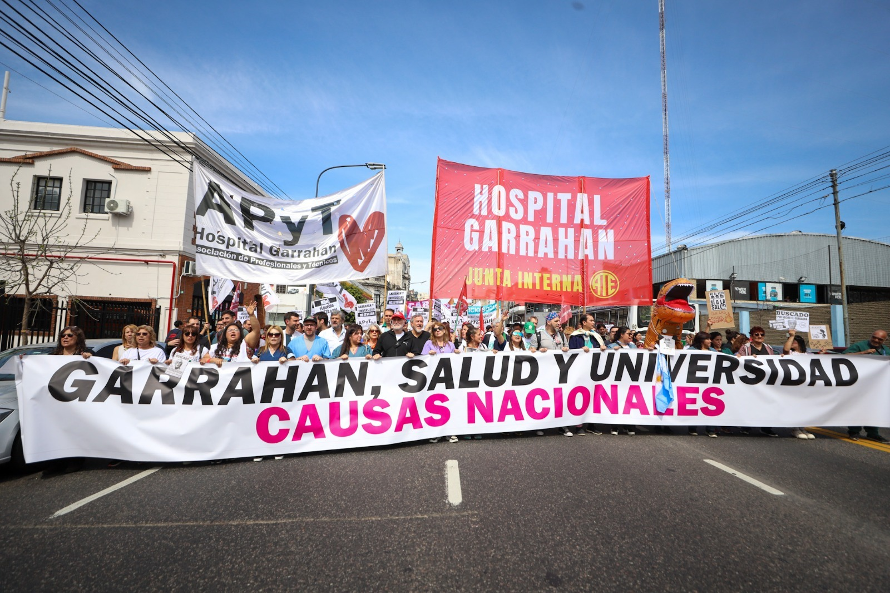
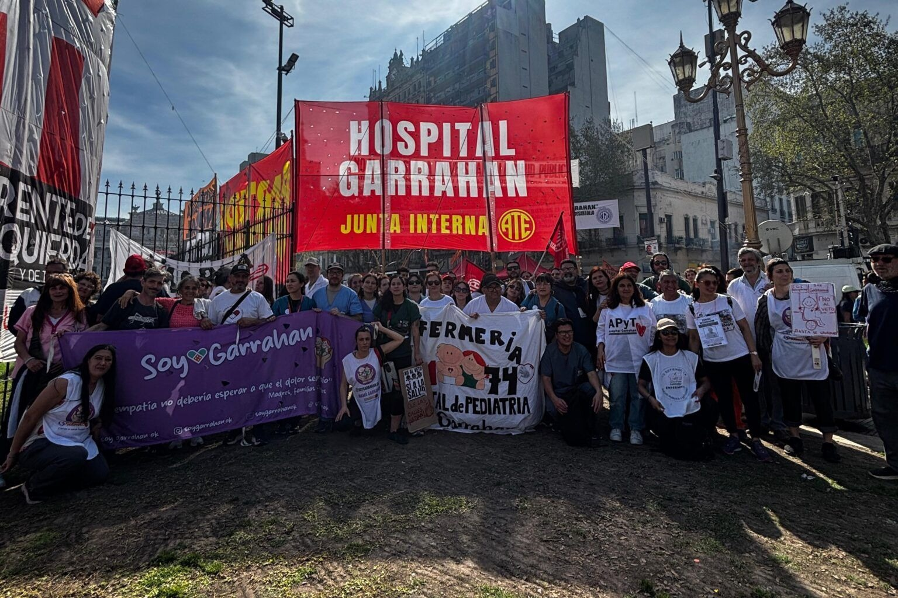
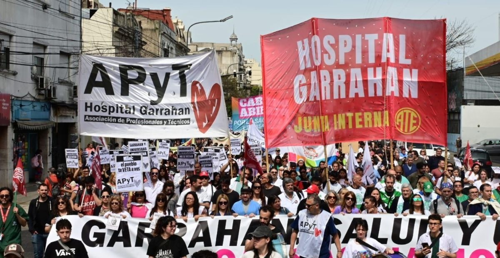
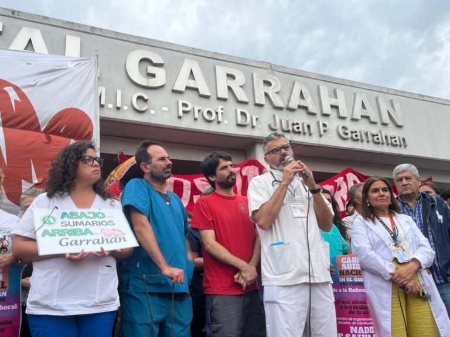
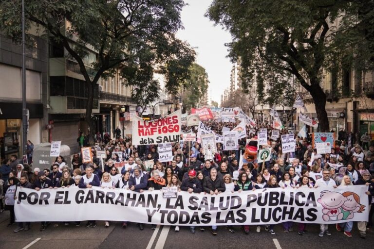

Desde la Gaceta Clara Zetkin (GCZ) nos acercamos al Hospital Garrahan para conversar con Alejandro Lipcovich, secretario de la Junta Interna de ATE. El hospital, emblema de la salud pública pediátrica en Argentina, se encuentra en el centro de un conflicto marcado por el ajuste presupuestario, el deterioro salarial y las políticas de vaciamiento impulsadas por el gobierno nacional. Sus trabajadorxs vienen protagonizando una importante lucha en defensa del hospital, de sus condiciones laborales y del derecho a la salud, logrando un amplio apoyo social y visibilizando la crisis del sistema sanitario público. Desde la GCZ nos proponemos en esta entrevista no solo abordar el conflicto, sino también poner en relieve el rol del Hospital Garrahan como espacio de producción científica y tecnológica, fundamental para la atención de alta complejidad.

AL: El Garrahan es el principal hospital de salud pediátrica de alta complejidad del país. Atiende cientos de miles de consultas por año (600.000 recientemente), realiza 10.000 cirugías anuales y más de 100 trasplantes. Es el único centro de referencia nacional para tratamientos sofisticados, enfermedades poco frecuentes y oncología pediátrica, superando a cualquier efector público o privado. Ha transformado la vida de familias trabajadoras de todo el país. Este lugar no se logró por concesión de los gobiernos, sino por décadas de lucha independiente de sus trabajadores, enfrentando recortes y defendiendo el presupuesto ante gobiernos de distinto signo (peronistas, macristas, Milei).
Hoy, además, el hospital actúa como válvula de escape de la crisis general de la salud pública: ante la falta de pediatras en hospitales de distrito de CABA y Provincia de Buenos Aires, llegan al Garrahan pacientes con patologías menos complejas, lo que recarga su labor. El actual gobierno busca liquidar toda responsabilidad nacional en salud (como hizo con el SOMER), pero no pudo con el Garrahan por la gran resistencia unificada de sus trabajadores, que trascendió lo gremial para defender integralmente la salud pública.
AL: Durante 2025 tuvimos seis meses de conflicto intenso: arrancó con una huelga general de residentes, luego se sumó el personal de planta. Los residentes levantaron la huelga ante amenazas de despido, pero los trabajadores de planta continuamos. Con un gran apoyo popular, movilizando a trabajadores de otros sindicatos (cuyas direcciones nos dieron la espalda), llenamos Plaza de Mayo en julio. Sufrimos descuentos brutales, amortiguados con un fondo de lucha solidario.

El conflicto, organizado en un frente único entre ATE, la Asociación de Profesionales y profesionales autoconvocados, con asambleas generales que definían las medidas, fue tan tenaz que el gobierno terminó dando unilateralmente un aumento del 61%, sin negociar para resolverlo. En paralelo, se aprobó una ley de emergencia pediátrica que recogía muchos de nuestros reclamos. El gobierno la vetó y violó la insistencia del Parlamento, pero aplicó parte de la cuestión salarial, un gran triunfo fuera de toda pauta paritaria (en un país con paritarias al 1%).
Hoy estamos ante una contraofensiva: nos persiguen con sumarios truchos a 40 trabajadores (varios dirigentes). El jefe de Gabinete anunció despidos sin habernos permitido ejercer defensa. Nos resistimos con asambleas y movilizaciones, obtuvimos fallos judiciales favorables (aunque precarios). Adorni quedó expuesto como un corrupto, y nosotros seguimos trabajando. Las banderas actuales son: exigir la aplicación plena de la ley de emergencia pediátrica; frenar el impuesto a las ganancias sobre salarios que apenas cubren la canasta familiar; y frenar el vaciamiento por falta de ingreso de personal en dos años.
AL: Mirá, el Garrahan tiene un vasto desarrollo en investigación. Desde la dirección de docencia e investigación, donde yo trabajo como administrativo, existe un volumen de actividad muy grande. No soy investigador, pero te puedo decir que hay un incentivo a promover trabajos de investigación. Distintos profesionales de diversas áreas realizan estudios vinculados a su labor cotidiana. Eso hace que el hospital tenga jornadas académicas de prácticamente todas las disciplinas, donde se presentan trabajos de médicos, enfermeros, técnicos. Es un factor de desarrollo, de estar a la vanguardia en procedimientos, de intercambio colectivo sobre métodos de trabajo. Pero claro, para eso necesitás recursos y tiempo. El problema es que con salarios que no alcanzan, la gente tiene que tener más de un empleo, y el tiempo para investigar, más allá de la tarea asistencial, se reduce muchísimo. Es una pelea constante poder contar con ese tiempo.

AL: Existe una masa muy grande de actividad investigativa dispersa en los servicios. No se limita a un área cerrada. Hay investigaciones específicas que cuentan con financiamiento, pero también está esa otra investigación más cotidiana que surge de la práctica de cada profesión. Después, hay una figura clave que son lxs becarixs. Como sabemos la beca es un eufemismo clásico, un encubrimiento de una relación laboral, y en este contexto de ajuste, hay una reducción de becas anunciada. Pero lxs becarixs cumplen funciones en los servicios, hacen guardias que no tienen un propósito formativo sino de mantener en funcionamiento esas áreas. Sin becarixs, muchas tareas asistenciales no ocurrirían.
AL: Sí, existe articulación. En las jornadas académicas, en muchos casos se interactúa con hospitales de otros lugares del mundo: de España, Estados Unidos, Latinoamérica. Indudablemente el Garrahan está a la vanguardia dentro del país en esa interacción. Pero todo esto enfrenta muchísimos obstáculos hoy, porque se hace con menores recursos. En este contexto de vaciamiento se reduce la capacidad de tener gente dedicada a mantener esos vínculos y de producir los trabajos que se presentan en esos intercambios.

AL: Me consta que se ha reducido el financiamiento para investigaciones específicas. Hay menos investigaciones financiadas que en el pasado, y eso es una degradación de una función que debería ser propia del hospital: no solo la actividad clínica, sino también la investigación. A eso se suma el ajuste en las becas: al recortarse las becas, hay menos actividad de formación de nuevos profesionales. Esto es un golpe a los servicios porque la tarea que hacían esxs becarixs no va a ser reemplazada por nuevo personal de planta, ya que no está ingresando nadie. Así que estamos en un momento muy crítico, con menos investigación y menos formación.
AL: Durante toda la crisis del 2025, el elemento más significativo fue que se retiraban trabajadorxs muy calificados de distintas áreas, bajo el peso de salarios muy magros y condiciones de trabajo que empeoraban. Durante la propia lucha denunciamos cerca de 300 renuncias, y eso disminuía la capacidad de atención. Implicaba que hubiera cosas muy específicas que se dejaran de hacer en el Garrahan. El gran triunfo salarial de mitad de año disminuyó la presión por renuncias, pero como no ingresó personal nuevo, ese daño que se sufrió no se ha repuesto. La fuga de especialistas frenó su ritmo, pero la pérdida de capacidades sigue ahí porque los que se fueron no volvieron y no hay reemplazos.

AL: La experiencia del 2025 es una historia que está fresca y no la queremos perder. Las luchas tienen alzas y bajas; ahora no estamos en un momento de alza, pero sí hay una gran conciencia de que es importante volver a organizarnos. Nuestro enemigo, el gobierno y sus funcionarios, perdieron en el terreno salarial, se reagruparon y están contraatacando con sumarios y amenazas de despido. Ahora es nuestro turno de contraatacar. Tenemos que hacerlo con los mismos métodos del año pasado: agrupar nuestras fuerzas en asambleas sin distinción de afiliación, tarea o profesión, y convocar una lucha común con asambleas, paros y movilizaciones. Hay que convocar el apoyo social, porque los principales beneficiarios del Garrahan son los hijos e hijas de las familias trabajadoras de nuestro país. Eso se entendió muy bien el año pasado.
Frente a un gobierno desprestigiado, con las cúpulas sindicales y la oposición tradicional allanándole el camino, la tarea de defender la salud, la educación, la ciencia y la tecnología debe caer en nuestras propias manos, las de los trabajadores de base.